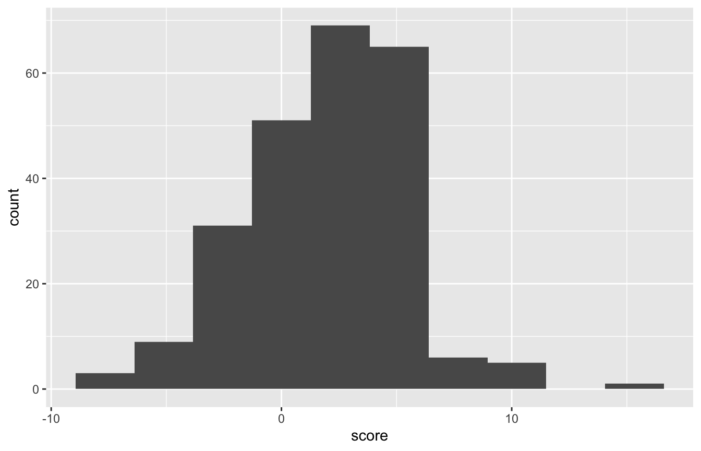
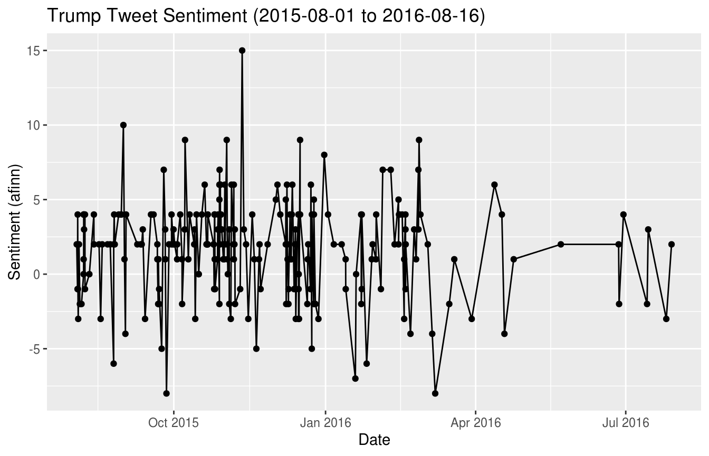
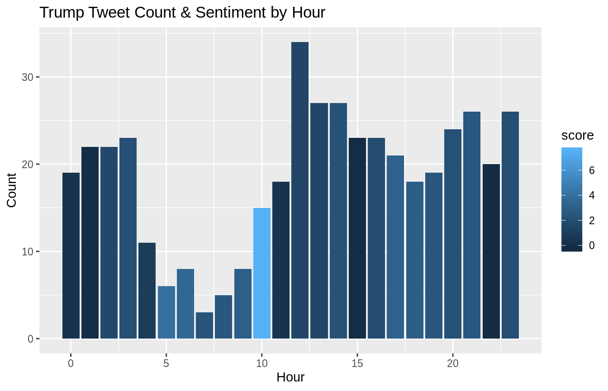
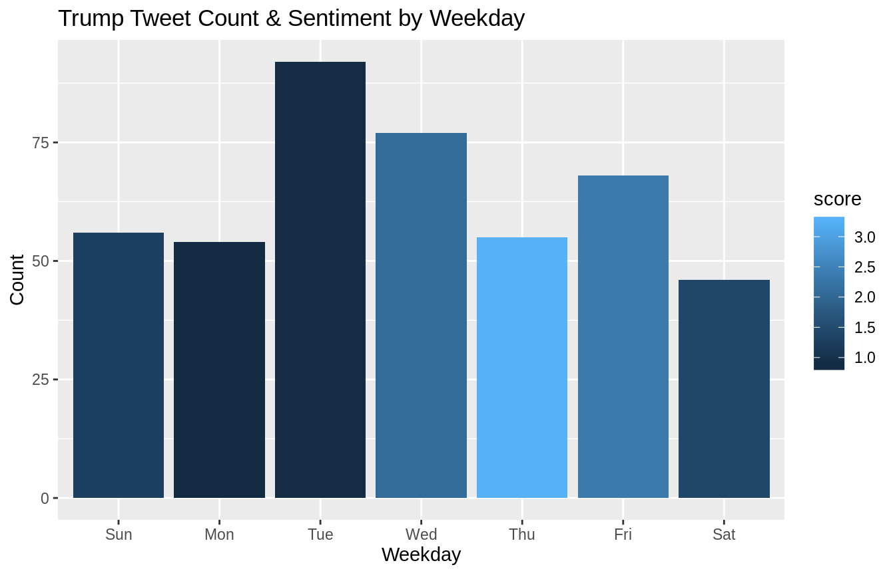
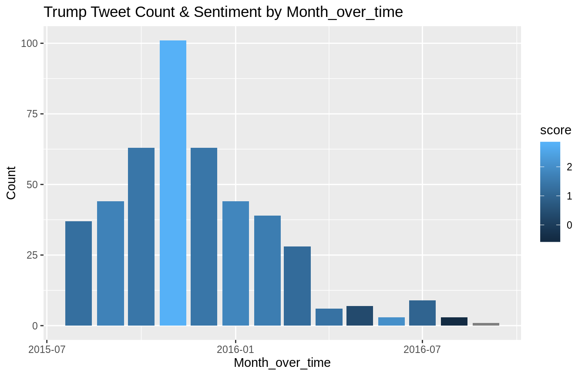

tidyverse
This vignette is based on data collected for the 538 story entitled “The World’s Favorite Donald Trump Tweets” by Leah Libresco available here.
Load required packages to reproduce analysis.
library(fivethirtyeight)
# tidyverse includes ggplot2, tibble, tidyr, readr, purrr, dplyr:
library(tidyverse)
library(tidytext)
library(stringr)
library(lubridate)
library(knitr)
library(hunspell)
# Turn off scientific notation
options(scipen = 99)## check out structure and date range ------------------------------------------------
(minDate <- min(date(trump_twitter$created_at)))## [1] "2015-08-01"(maxDate <- max(date(trump_twitter$created_at)))## [1] "2016-08-16"my_hunspell_stem <- function(token) {
stem_token <- hunspell_stem(token)[[1]]
if (length(stem_token) == 0) return(token) else return(stem_token[1])
}
vec_hunspell_stem <- Vectorize(my_hunspell_stem, "token")We first remove URLs and stopwords as specified in the tidytext library. Stopwords are common words in English. We also do spellchecking using hunspell.
trump_tokens <- trump_twitter %>%
mutate(text = str_replace_all(text,
pattern=regex("(www|https?[^\\s]+)"),
replacement = "")) %>% #rm urls
mutate(text = str_replace_all(text,
pattern = "[[:digit:]]",
replacement = "")) %>%
unnest_tokens(tokens, text) %>% #tokenize
mutate(tokens = vec_hunspell_stem(tokens)) %>%
filter(!(tokens %in% stop_words$word)) #rm stopwordsTo measure the sentiment of tweets, we used the AFINN lexicon for each (non-stop) word in a tweet. The score runs between -5 and 5. We then sum the scores for each word across all words in one tweet to get a total tweet sentiment score.
trump_sentiment <- trump_tokens %>%
inner_join(get_sentiments("afinn"), by=c("tokens"="word"))
trump_full_text_sent <- trump_sentiment %>%
group_by(id) %>%
summarise(score = sum(score, na.rm=TRUE)) %>%
ungroup() %>%
right_join(trump_twitter, by="id") %>%
mutate(score_factor = ifelse(is.na(score), "Missing score",
ifelse(score < 0, "-.Negative",
ifelse(score == 0, "0", "+.Pos"))))trump_full_text_sent %>%
count(score_factor) %>% mutate(prop = prop.table(n))## # A tibble: 4 x 3
## score_factor n prop
## <chr> <int> <dbl>
## 1 -.Negative 59 0.132
## 2 +.Pos 173 0.386
## 3 0 8 0.0179
## 4 Missing score 208 0.46446.4% of tweets did not have sentiment scores. 15.4% were net negative and 36.6% were net positive.
ggplot(data=trump_full_text_sent, aes(score)) + geom_histogram(bins = 10)
sentOverTimeGraph <- ggplot(data=filter(trump_full_text_sent,!is.na(score)), aes(x=created_at, y=score)) +
geom_line() +
geom_point() +
xlab("Date") +
ylab("Sentiment (afinn)") +
ggtitle(paste0("Trump Tweet Sentiment (",minDate," to ",maxDate,")"))
sentOverTimeGraph
most_pos_trump <- trump_full_text_sent %>%
arrange(desc(score)) %>%
head(n=5) %>%
.[["text"]]
kable(most_pos_trump, format="html")| x |
|---|
| Loved doing the debate…won Drudge and all on-line polls! Amazing evening, moderators did an outstanding job. |
| Loved being with my many friends in Tennessee. The crowd and enthusiasm was fantastic. I won the straw poll big! |
| Wow, every poll said I won the debate last night. Great honor! |
| Thank you, so many people have given me credit for winning the debate last night. All polls agree. It was fun and interesting! |
| Thank you @JoeTrippi for the nice, and true, words on #Media Buzz with terrific Howie Kurtz. Leading New Hampshire 30 to 12. @FoxNews |
most_neg_trump <- trump_full_text_sent %>%
arrange(score) %>%
head(n=5) %>%
.[["text"]]
kable(most_neg_trump, format = "html")| x |
|---|
| Failed presidential candidate Lindsey Graham should respect me. I destroyed his run, brought him from 7% to 0% when he got out. Now nasty! |
| Marco Rubio is a member of the Gang Of Eight or, very weak on stopping illegal immigration. Only changed when poll numbers crashed. |
| Ted Cruz is falling in the polls. He is nervous. People are worried about his place of birth and his failure to report his loans from banks! |
| Ted Cruz is a nervous wreck. He is making reckless charges not caring for the truth! His poll #’s are way down! |
| .@GovernorPataki did a terrible job as Governor of New York. If he ran again, he would have lost in a landslide. He and Graham ZERO in polls |
Total number of tweets and average sentiment (when available) by hour of the day, day of the week, and month
trump_tweet_times <- trump_full_text_sent %>%
mutate(weekday = wday(created_at, label=TRUE),
month = month(created_at, label=TRUE),
hour = hour(created_at),
month_over_time = round_date(created_at,"month"))
plotSentByTime <- function(trump_tweet_times, timeGroupVar) {
timeVar <- substitute(timeGroupVar)
timeVarLabel <- str_to_title(timeVar)
trump_tweet_time_sent <- trump_tweet_times %>%
rename_(timeGroup = timeVar) %>%
group_by(timeGroup) %>%
summarise(score = mean(score, na.rm=TRUE),Count = n()) %>%
ungroup()
ggplot(trump_tweet_time_sent, aes(x=timeGroup, y=Count, fill = score)) +
geom_bar(stat="identity") +
xlab(timeVarLabel) +
ggtitle(paste("Trump Tweet Count & Sentiment by", timeVarLabel))
}plotSentByTime(trump_tweet_times, hour)
plotSentByTime(trump_tweet_times, weekday)
plotSentByTime(trump_tweet_times, month_over_time)